<style> .reveal section img { background:none; border:none; box-shadow:none; } #left { margin: 10px 0 15px 20px; text-align: center; float: left; z-index:-10; width:48%; font-size: 0.85em; line-height: 1.5; } #right { margin: 10px 0 15px 0; float: right; text-align: center; z-index:-10; width:48%; font-size: 0.85em; line-height: 1.5; } </style> ## Unidad 3: Polarización del BJT <span style="font-size: 24.0pt; "> **Profesor:** Ing. Israel Chaves Arbaiza </span> <span style="font-size: 24.0pt;"> **Curso**: Electrónica Básica para Ing. Mecánica </span> <img width="900" height="130" src="media/logo_slides.jpg"> --- ## Objetivos de la clase <span style="font-size: 24.0pt; "> * Dominar las ecuaciones del transistor * Aprender a analizar la recta de carga de un BJT * Entender el concepto de saturación en el BJT </span> --- ## Ecuaciones importantes <span style="font-size: 25.0pt; "> Las relaciones más importantes en un BJT son: $$ V_{BE}=0,7 [V] $$ $$ I_{E}=(\beta + 1 ) I_{B} \cong I_{C} $$ $$ I_{C} = \beta I_{B} $$ </span> --- ## Polarización del BJT <span style="font-size: 25.0pt; "> La operación de las regiones de corte, saturación y lineal, para un transistor BJT, se da como sigue: 1. **Región lineal/activa:** * Unión base-emisor polarizada en directa * Unión base-colector polarizada en inversa 2. **Región de corte:** * Unión base-emisor polarizada en inversa * Unión base-colector polarizada en inversa 3. **Región de saturación:** * Unión base-emisor polarizada en directa * Unión base-colector polarizada en directa </span> --- ## Polarización del BJT <span style="font-size: 25.0pt; "> Para que el BJT se polarice en su región activa, o de operación lineal, se debe cumplir que: 1. La unión **Base-Emisor** debe polarizarse en directa, con el voltaje de polarización entre 0, 6 V y 0, 7 V 2. La unión **Base-Colector** debe polarizarse en inversa (más positivo en la región N) 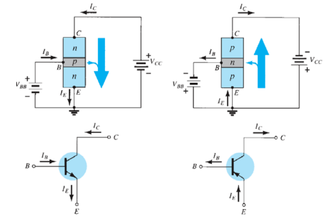 </span> --- ## Polarización Fija <span style="font-size: 25.0pt; "> * También llamada **Emisor Común** * Es la configuración de polarización de CD más simple. * Se aplica igual para el transistor PNP, cambiando todas las direcciones de la corriente y polaridades del voltaje. * Para el análisis en CD, se aisla la red de los niveles de CA cambiando los capacitores por un abierto 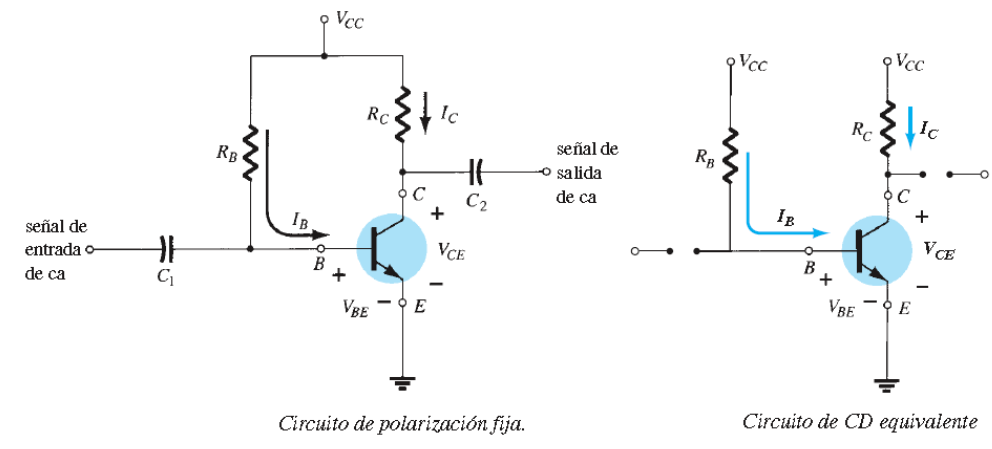 </span> --- ## Polarización Fija <span style="font-size: 25.0pt; "> 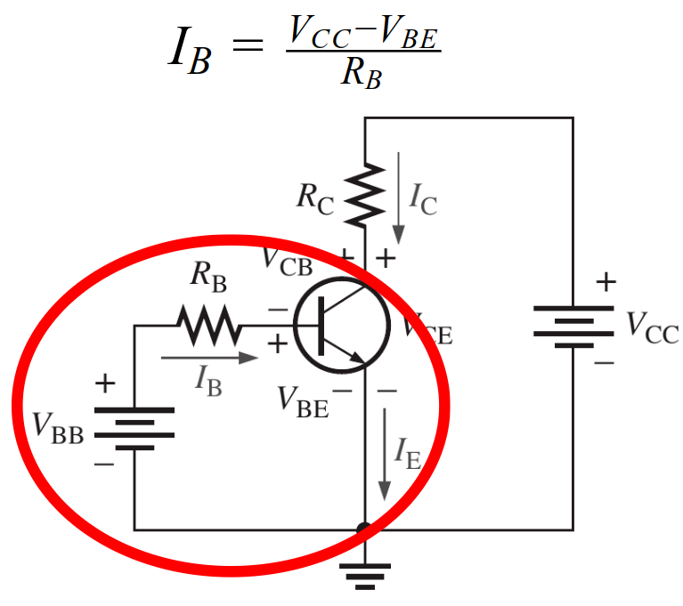 </span> --- ## Polarización Fija <span style="font-size: 25.0pt; "> 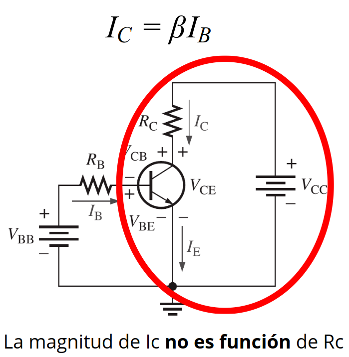 </span> --- ## Saturación del BJT <span style="font-size: 25.0pt; "> 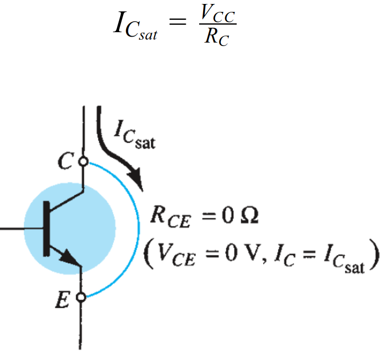 </span> --- ## Saturación del BJT <span style="font-size: 25.0pt; "> 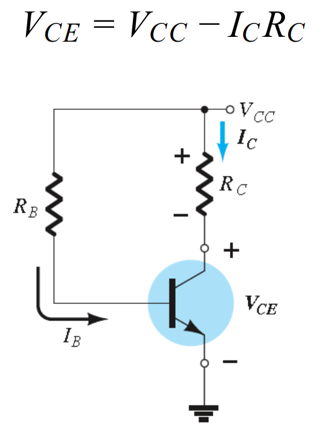 </span> --- ## Punto de operación <span style="font-size: 22.0pt; "> * **Polarización:** Se refiere a la aplicación de voltajes en DC para fijar una corriente y un voltaje en el BJT * Una vez polarizado, se tiene un **punto de operación** * Se pueden tener distintos puntos de operación para un mismo circuito </span> --- ## Punto de operación <span style="font-size: 22.0pt; "> 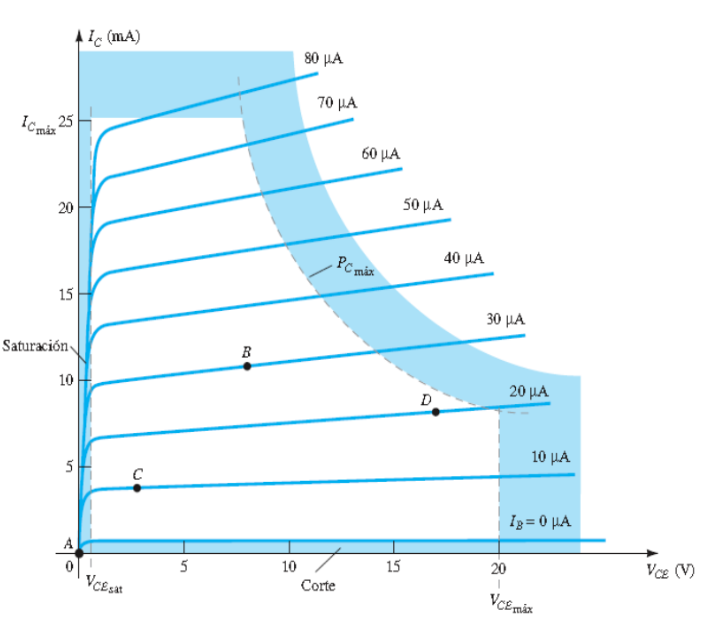 </span> --- ## Punto de operación <span style="font-size: 22.0pt; "> 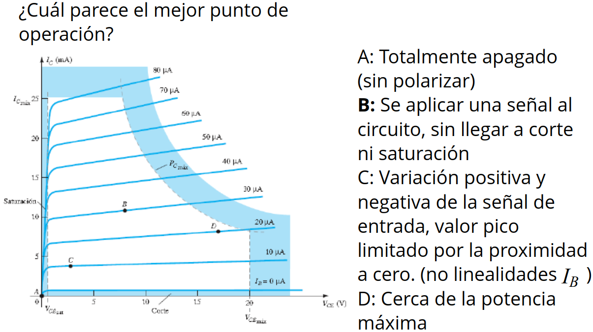 </span> --- ## Análisis de la recta de carga <span style="font-size: 22.0pt; "> 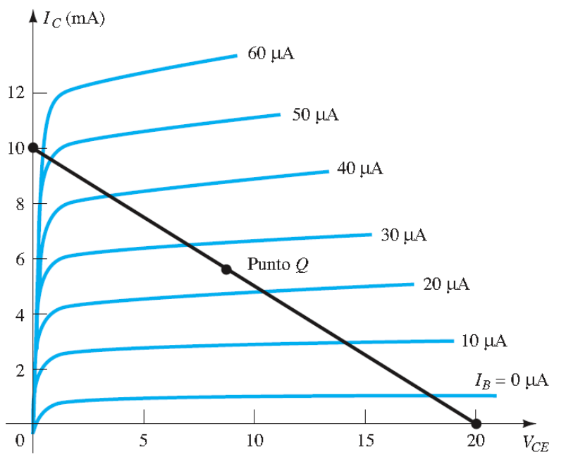 </span> --- ## Análisis de la recta de carga <span style="font-size: 22.0pt; "> La resistencia en el emisor estabiliza el circuito 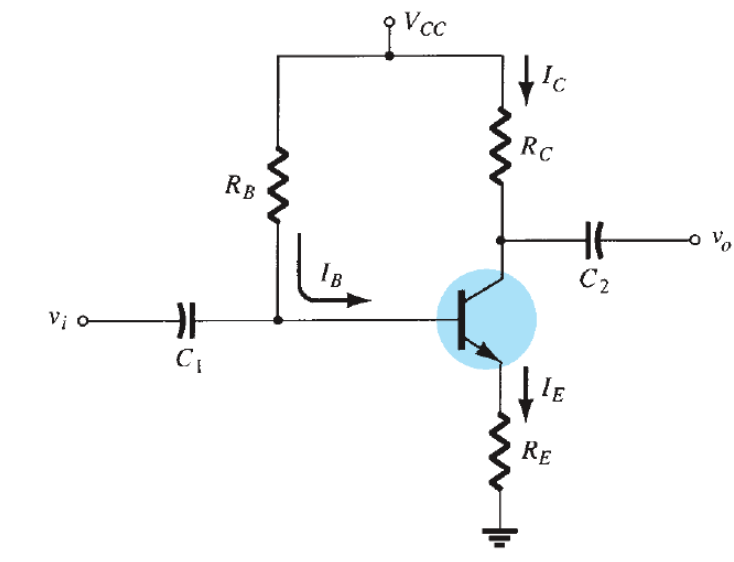 </span> --- ## Análisis de la recta de carga <span style="font-size: 22.0pt; "> Ejemplo: 1. Definir parámetros para la recta de carga 2. Con una corriente base de 15 $\mu A$, obtenga los valores de $ I_{C_Q}$, $V_{CE_Q}$ 3. Determine la beta de CD en el punto Q 4. Usando el beta obtenido, calcule $R_{B}$, y sugiera un valor estándar 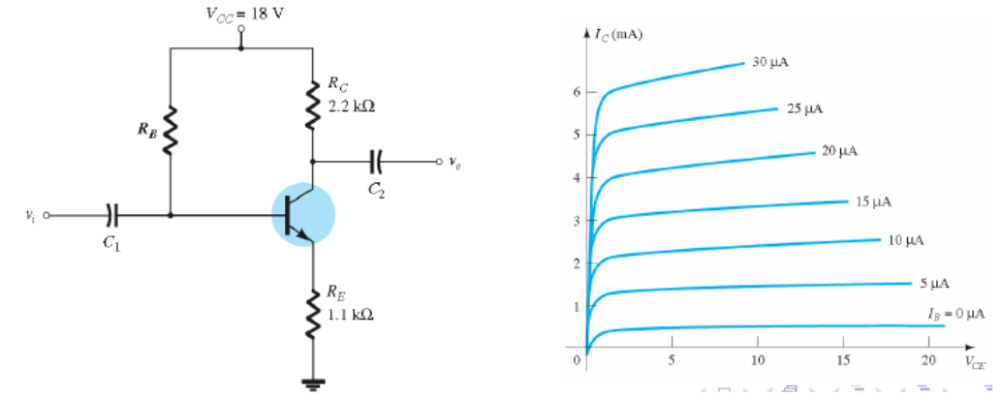 </span> --- ## Ejercicios <span style="font-size: 22.0pt; "> 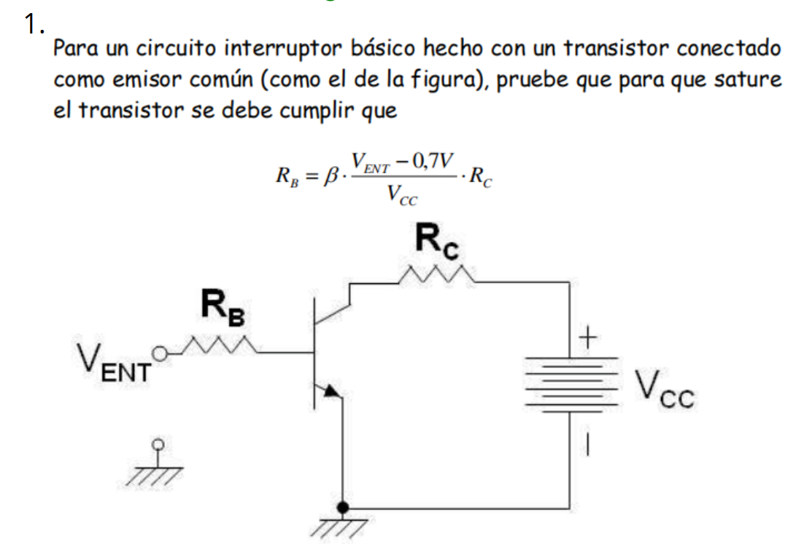 </span> --- ## Ejercicios <span style="font-size: 22.0pt; "> 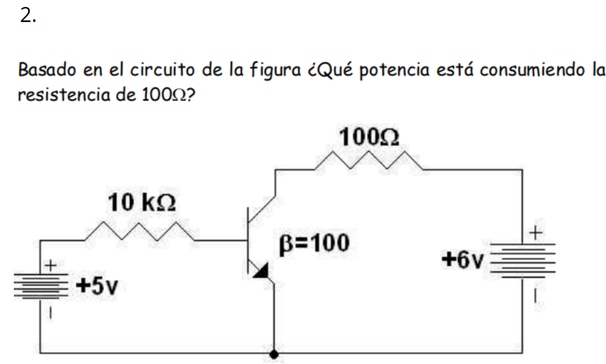 </span> --- ## Ejercicios <span style="font-size: 22.0pt; "> 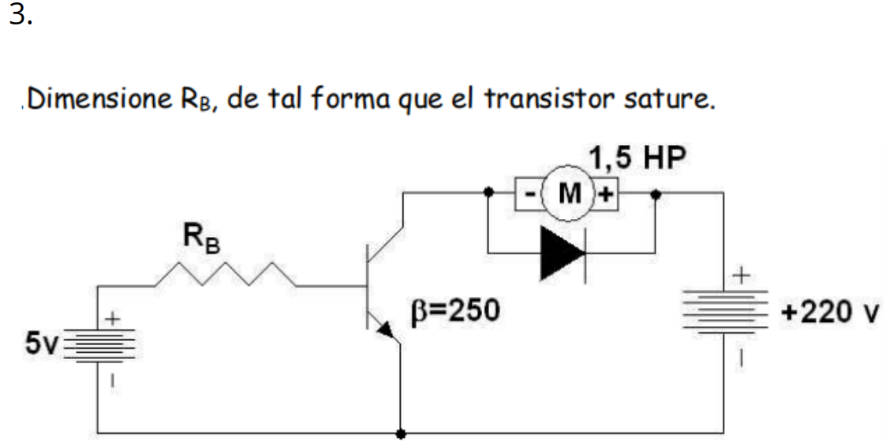 </span>